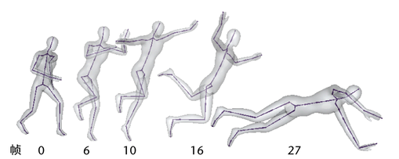
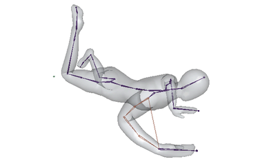

动画层尤其适用于处理运动捕捉数据。只能编辑动画中需要更改的特定点，且不能更改其他数据。
动画层可以使用运动捕捉数据来协助解决很多常见问题，包括实体穿透、手脚振动和不稳定的地板接触。还可以使用动画层来确保对象碰到场景中的特定目标。
以下步骤介绍了一个工作流示例，其中用到了动画层的运动捕捉数据，以在角色的腕部接触地面时稳住它。
使用动画层来校正或增强运动捕捉数据
- 将一个运动捕捉数据序列加载到场景中。
本示例中介绍的场景带有两足动物骨架的运动捕捉数据。
在本示例动画中，腕部在第 27 帧时与地板接触，但手的位置出现颤抖，而且并不自然。我们希望手在第 27 帧接触地面，然后在第 27 帧至第 40 帧之间保持稳定。可以修改这些帧之间的动画以在手与地面接触后保持稳定。
 - 执行以下操作，在肩部和腕部之间插入一个链解算器：
- 从主菜单栏选择“骨架 > IK 控制柄工具”(Skeleton > IK Handle Tool) >
 。
。
- 选择肩部作为起始关节，然后选择腕部作为末关节。（另请参见创建 IK 控制柄。）
- 在“IK 控制柄设置”(IK Handle Settings)中，选择“单链解算器”(Single-Chain Solver)作为“当前解算器”(Current solver)。
注：本示例采用单个链 IK 解算器，但也可以使用 HumanIK 装备上的效应器来达到相同的效果。
在接下来的步骤中，将使用 IK 控制柄作为效应器来操纵腕部位置。
- 从主菜单栏选择“骨架 > IK 控制柄工具”(Skeleton > IK Handle Tool) >
- 选择创建好的 IK 控制柄，然后选择“动画层编辑器”(Animation Layer Editor)菜单栏中的“层 > 从选定对象创建覆盖层”(Layers > Create Override Layer From Selected)。（另请参见创建动画层。）
将在“动画层编辑器”(Animation Layer Editor)堆栈中为 IK 控制柄创建名为 AnimLayer1 的新覆盖层。
默认情况下，所有控制柄的属性将被添加到层中，包括其“IK 融合”(IK Blend)值。请参见将属性添加到动画层和从动画层移除属性。
- 双击新层并将其重命名为“Stabilize_Hand”，然后单击
 以禁用该层。
以禁用该层。
禁用该层后即可查看原始动画，并识别希望修改的帧。尽管该层还不包含动画，但它处于“覆盖”(Override)模式，这会导致 IK 控制柄显示在一个无效的位置，除非禁用该层。
默认情况下，层在禁用后会被锁定，无法接收关键帧。可以通过在“动画层编辑器”(Animation Layer Editor)中禁用“选项 > 锁定禁用层”(Options > Lock Muted Layers)来更改此选项。在接下来的步骤中，我们将解除锁定这个新层，以使它可以接收关键帧。
- 播放动画以确定要稳定手/腕部的地方。

- 单击
 解除锁定层，以便设定关键帧。
解除锁定层，以便设定关键帧。
- 选择 IK 控制柄，在第 27 帧设定一个关键帧。
这会在第 27 帧固定 IK 控制柄的位置。（另请参见在动画层上为对象设置关键帧。）
在“动画层编辑器”(Animation Layer Editor)中，注意 Stabilize_Hand 层上的绿色“交通灯”反馈。这表示该层可用于设定关键帧。
由于在第 3 步中为 IK 控制柄创建了层，因此在控制柄上设定的关键帧将被包含在该层上。由于该层处于“覆盖”(Override)模式，其动画将在取消禁用层并播放场景中的动画时覆盖运动捕捉数据。
- 单击
 以取消禁用层并播放场景中的结果动画。
以取消禁用层并播放场景中的结果动画。
在接下来的步骤中，将为控制柄“IK 融合”(IK blend)值设置关键帧，以使其效果（修改原始动画）融合到多个帧中。
- 为控制柄“IK 融合”(IK Blend)值设置关键帧，如下所示：
- 转至第 0 帧（在希望修改手/腕部动画之前），将“IK 融合”(IK blend)值设置为 0，并设置一个关键帧。
- 转至第 20 帧（希望修改后的动画在此处开始融合到原始数据），将“IK 融合”(IK Blend)值设置为 0，并设置一个关键帧。
- 转至第 27 帧（希望修改后的动画在此处完全覆盖原始动画），将“IK 融合”(IK Blend)值设置为 1，并设置一个关键帧。
- 在“曲线图编辑器”(Graph Editor)中，调整刚才设置的“IK 融合”(IK Blend)关键帧以使用线性切线。（请参见编辑切线和线性。）
在第 27 帧后，手将与地面接触并稳定下来。
- （可选）如果对修改感到满意，可以使用运动捕捉数据合并或烘焙修改的动画。请参见合并动画层和烘焙动画层。